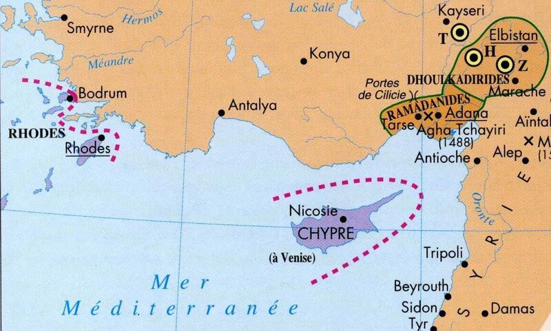
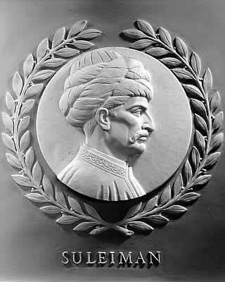
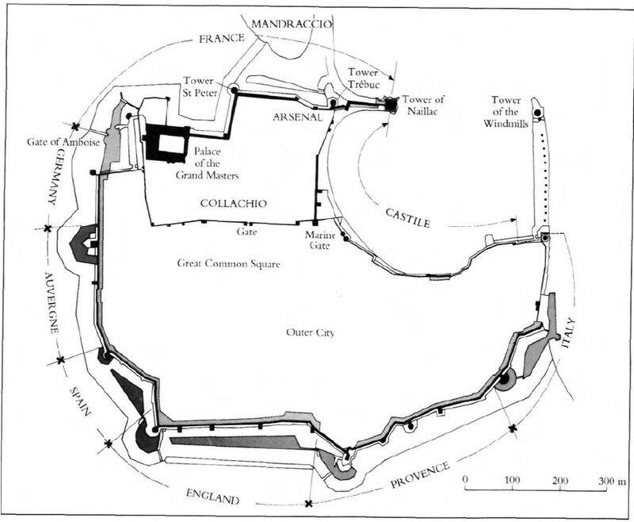
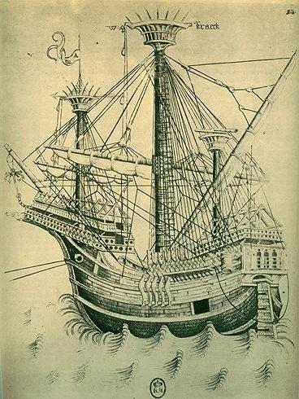

Высокочтимейший сенат, османы,
Направясь прямо к острову Родосу,
Соединились там с запасным флотом.
Шекспир, Отелло, Акт 1, сц. 3 (перевод М. Лозинского)
Иоаннитам не приходилось рассчитывать на милость османов. За те два века, которые они находились на Родосе, госпитальеры искали, атаковали и уничтожали мусульман везде, куда могли дотянуться на своих кораблях. Места их базирования становились базами для джентльменов удачи, национальность которых не имела значение – имело значение лишь то, что они христиане. Первоначально всех захваченных пленников-мусульман безжалостно убивали. Так, в 1320 г. было зверски убито 6250 пленных турок. Почти тысячу из них убила собственноручно одна англичанка-паломница к святым местам (Fradin, Baron de Belabre «Rhodes of the Knights», Oxford, 1908, pp. 17-18). В это трудно поверить, но приводятся свидетельства очевидцев. Не удивительно, что в турецких источниках того времени Родосские рыцари изображаются жестокими пиратами и головорезами. Правда, в XV веке оценки смягчаются, между турками и госпитальерами появляется даже некое подобие торгового обмена. Однако официальная позиция османов не изменилась. Родос находился как раз на пути между столицей империи и вновь приобретенной провинцией – Египтом. Помимо ценных товаров, по этому маршруту из Константинополя в Суэц следовали мусульманские паломники в Мекку.
Кроме того, госпитальеры, помимо Родоса, закрепились и на материке, в частности, построили сильную крепость Бодрум на месте старинного Галикарнаса.

Карта Восточного Средиземноморья в первой четверти XVI века.

Один из 23 барельефов с портретами выдающихся законодателей в Палате представителей США, в Капитолии. Скульптор И. Киселевский (1950 г.)
Но он вынужден был принимать в расчет и боевые достоинства рыцарей-иоаннитов, силу которых турки уже испытали на себе. Кроме того, по сравнению с периодом Мехмета II были значительно усовершенствованы фортификационные сооружения на Родосе и в других владениях госпитальеров в Эгейском море. Вряд ли имелась еще в Средиземноморье крепость, сравнимая с родосской.

План крепости и схема ее обороны в 1522 году
Великий магистр ордена св. Иоанна Иерусалимского, Филипп Вилье де л'Иль Адам, находившийся во Франции, сразу после получения известия о своем избрании на этот пост, которое состоялось 21 января 1521 года, призвал рыцарей ордена из всех приорств Европы собраться в Марселе, где к отплытию уже была подготовлена орденская каракка и несколько фелюк, груженых продовольствием и боеприпасами.

Отплытие каравана омрачилось несколькими происшествиями. Халатность одного из офицеров каракки привела к возникновении на ее борту пожара. Экипаж поддался панике и начал покидать корабль. Личное мужество и воля нового главы ордена позволили овладеть ситуацией и справиться с огнем. Но не успела флотилия выйти в море, как налетел шквал с грозой, шаровая молния проникла в каюту Великого магистра, сожгла его шпагу (не повредив, правда, ножен) и убила девять человек. Вот и не верь после этого в предзнаменования! (источник: E.Biliotti & l’abbe Cottret « L'Ile de Rhodos»,1881, p.289) Но на этом плохие знамения не прекратились. В Сиракузах, куда флотилия зашла для ремонта поврежденных ураганом кораблей, де л'Иль Адам получил предупреждение, что на маршруте движения каравана действует турецкий корсар Куртоглу, целью которого является перехват каравана Великого магистра. Один из самых известных средиземноморских пиратов того времени, Куртоглу (Kurtoğlu Muslihiddin Reis (1487–1535), известный в европейских странах также под именем Куртоголи) с 1516 года находился на адмиральской службе у султана. Он принял активное участие в захвате Египта. В сентябре 1519 года еще Селимом I он был назначен командующим османским флотом, предназначенным для участия в захвате Родоса.
В мае 1521 года Куртоглу во главе эскадры из 30 галер и 50 фуст вышел из Стамбула. Его главной задачей было захватить корабли великого магистра иоаннитов, которые следовали из Европы. Адмирал на этот раз не только подчинялся приказу Сулеймана, но имел и личные мотивы: незадолго до этого от рук иоаннитов погибли два его брата, третий же был взят в плен и находился на Родосе.
Считается во многих источниках, что Картоглу пошел непосредственно к Родосу. Однако тщательный анализ документов показывает, что он направил свою эскадру к мысу Малеа на самой южной оконечности Пелопонесса, чтобы наверняка пересечь курс каравана госпитальеров: узкий пролив между островами в этом месте практически исключает возожность пройти незамеченным. Эскадра Куртоглу стала на якорь на траверзе мыса. Полученная информация подтверждала, что корабль Великого магистра уже следует к Родосу. Но де л'Иль Адаму повезло вновь. То ли случайно, то ли с расчетом, но корабли магистра обогнули мыс Малеа темной ночью, прошли незамеченными и 19 сентября благополучно прибыли на Родос.
Куртоглу повторил попытку захватить корабль магистра в начале следующего 1522 года. Но тогда на борту Большой каракки ордена находился знаменитый генерал галер Франции, госпитальер, победитель адмирала Говарда Прежан де Биду. Мы о нем подробно писали ранее Ясно, что при таком командире у иоаннитов османские моряки не могли рассчитыать на удачу.
Мы еще встретимся с адмиралом Куртоглу в ходе дальнейшего рассказа. А пока приведем интересный случай, приключившийся с турецким флотоводцем. Когда в 1522 году флот османов, блокировавший остров, не сумел задержать европейскую галеру, прибывшую с усилением для осажденных, разъяренный Сулейман приказал высечь своего адмирала на палубе флагманского корабля, на глазах у всех моряков. (Jan Rogozinnski “Pirates. Brigands, Buccaneers, and Privateers in Fact, Fiction, and Legend” ,1995). Другого подобного случая публичной порки адмирала я не встречал. Однако это не помешало Куртоглу в дальнейшем стать первым правителем захваченного Родоса.
Мнения ближайших советников Сулеймана по вопросу о целесообразности штурма Родоса разделились. Великий визирь Сулеймана Пири Мехмед-паша Караманли возражал против экспедиции. По его мнению, высадка турецкой армии и самого султана на остров была опасна. Войско может оказаться отрезанным от континента. Кроме того, сила турецкой армии в кавалерии, которая растеряет свои преимущества, оказавшись у крепостных стен на острове. Более того, Пири-паша не доверял (и, как показали события, справедливо) информации еврейского лекаря, прибывшего с Родоса, что цитадель рыцарей плохо снабжается и что командует рыцарями старик, недавно прибывший из Франции.
Здесь в нашей истории появляется эпизод, который вызывает споры специалистов до сего времени. Прежние историки, и во главе их конечно английский профессор Ричард Ноллес (1545-1610), считали, что Сулейман решил ликвидировать все сомнения необычным путем: он вступил в переписку с главой родосских рыцарей Филиппом Вилье де л'Иль Адамом. Приводятся и тексты этих писем. В отличие от известной (на правах популярной легенды) переписки турецкого султана с запорожцами, в нашем случае письма обоих суверенов начинались с комплиментов, поздравлений и хвастливых заявлений, хотя заканчивались, как и у их последователей, вызывающими угрозами и бранью. Надо признать, что четкого подтверждения достоверности этих писем (как и в случае переписки Мехмеда IV с запорожцами!) нет. Тем не менее с некоторыми отрывками из этих писем мы познакомимся в дальнейшем.
Продолжим в следующий раз.